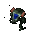

Centurion

In-game info panel
Costs: Extract 1600 Iron 1600 Carbon 1200 Titanium 200
New unit: Centurion
- Speed:
- 80 km/h
- Energy (HP):
- 225
- Sight range:
- 350 m
- Production time:
- 18 s
| Weapon | Power | Range | Targets |
|---|---|---|---|
| Low-calibre Gun | 12 | 1-6 | GA |
| Albatross Rocket | 20 | 2-7 | A |
Costs: Extract 800 Iron 800 Carbon 600 Titanium 100
Research time: 34 s (not shown in game)
Description
Difficult terrain on alien planets has fostered the need for the creation of an assault vehicle, which operates on a slightly different basis than conventional terrestrial military equipment. The solution is the light walker project. Equipped with assault guns and surface-to-air rockets, the machine will be suitable for varied tasks. Unfortunately, the prototype design does not allow for heavy armour or cannon weaponry.
Related
- Requires
- Light Factory, Design Office, Pioneer, Abigan, Sybel
- Unlocks
- Centurion, Helios Armour, Ion Servo
- Offers
- Centurion